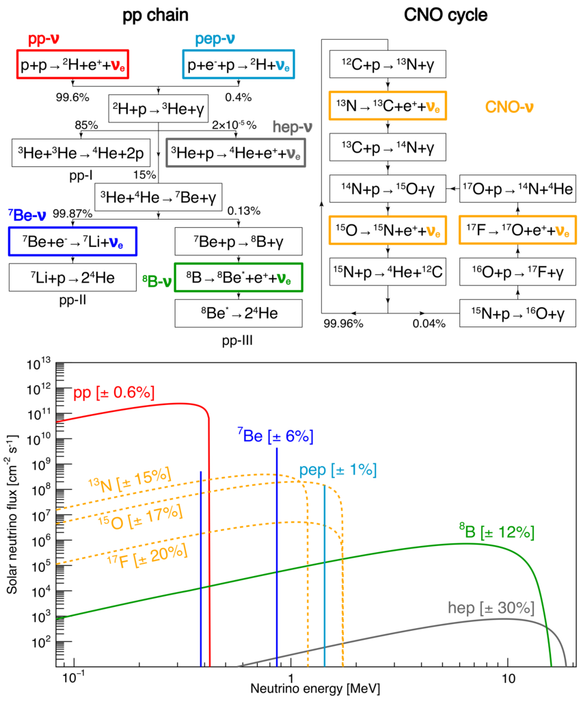

Recently, there was a nice paper out, Searching for exotic scalars at fusion reactors (arXiv:2502.12314) by Baruch et al that explored the hypothetical fluxes of axion-like particles sourced by all kinds of neutron activation during the operation of fusion reactors. If axion-like particles do exist, and they have couplings to nuclear matter, they would be produced copiously in such environments with large fluxes of neutrons, protons, pions etc. This is certainly true at fission reactors, where experiments like TEXONO () and now MINER and others have conducted searches for such particles. The fission reactor as a laboratory for axion-like particle searches has been successful for much of the same reason why nuclear reactors produce tons of neutrinos: their large neutron fluxes.
The typical antineutrino fluxes (sourced by beta decay) emitted by power reactors can be as high as \(10^{13}\) cm\(^{-2}\) s\(^{-1}\). We can ask the same question for fusion reactors: how many neutrinos/antineutrinos do they produce?
Well, if we only want to consider antineutrinos produced from beta decay sources, like in fission reactors, we need to know how many neutrons are produced during a typical reactor operation -- either in testing configurations at the present day, or, if we're lucky enough to get commercial reactors, in high power operating conditions in the future. Since the density and mass-by-weight of the plasmas are not expected to produce nearly as many neutrons as fission reactors, we can naively expect the resulting neutrino rates to be comparatively smaller, but perhaps non-negligible.
Before I go on, we should also think about the fuel composition to be considered. Some fuel compositions, like the potential \(p + ^{11}\rm{B}\) reaction are said to be aneutronic, although neutrons can still get produced a suppressed rates from side reactions. Therefore the fuel composition appears to matter a lot for the resulting neutrino rates. In addition, we can ask the fun question: do we get any neutrino production directly from the fusion processes themselves, like those in the Sun? In stars like our Sun, neutrinos are produced in huge amounts through the proton-proton and CNO chains. These involve reactions like \( p + p \to ^2\rm{H} + e^+ + \nu_e \), measured by Borexino and other solar neutrino experiments [Nature paper];
We can think of interesting reactions that are fuel composition-dependent; for example, consider a \( D + ^3\rm{He} \) mix giving rise to
$$ D + ^3\rm{He} \to ^4\rm{He} + p$$ $$ ^3\rm{He} + p \to ^4 \rm{He} + e^+ + \nu_e$$ $$p + p \to D + e^+ + \nu_e$$ $$p + e^- + p \to ^2\rm{H} + \nu_e$$
These would be interesting especially because they are neutrino sources, rather than antineutrino sources at a reactor. However, neutrinos talk to the rest of the Standard Model particles via the weak force -- the Sun can get away with producing huge amounts of neutrinos this way, but this might be way too hard to do in the lab (especially the 3-body pep process). Other processes that happen purely via the strong nuclear force may be too efficient at the types of densities and time scales we have access to in the lab. I therefore do not expect appreciable rates of neutrinos coming directly from nuclear fusion, although they are still interesting to think about. We can even check this using packages like Reaclib (through python api pynucastro).So, we turn purely to the rates from neutron activation in the reactor. To answer this question, there are a number of potential codes one can use to compute particle fluxes in complex environments with material geometry information, such as GEANT or FLUKA. I settled on OpenMC, a community-developed code for particle transport, specifically since it has a python api, making it more accessible.
Email: a.thompson@northwestern.edu